2.教育実践報告
「呉地区高校生平和の集い」の あゆみ ー その 1 ー
牧岡宏明（当時・広高校教諭、「集い」指導顧問）
「呉地区高校生平和の集い」が開かれるに至った流れは、68～69の大学紛争が全国に
広がり、大学生のオルグが高校に入り、69～70には高校生紛争が広島や呉でもあった。
校長室封鎖、卒業式の壇上で卒業証書を破く、校門に立て看板を掲げる等が行なわれた。
呉連会（呉地区高校生生徒会連合会）が、その運動の連絡場所にならないよう県教委
からの指導があったが、呉地区では呉連会の動きはなかった。
呉地区の高校では、72年の沖縄返還の前後に映画「沖縄」の上映運動が実施された。
平和教育を推進しようという事で、高教祖呉地区支部の中に平和教育推進部を萱原威
先生が中心となって、72年に結成された。
そして、映画「ヒロシマ」上映運動から始まり、呉地区の高校での8・6登校日の取り
組みを、一部の先生のクラス登校日から実績を重ね、多くの学校で登校日が実現した。
加えて、平和を考える日として各校で平和関係の映画の上映や、被爆体験の講演会を実施してきた。
生徒にはその感想を書かせるだけに終わっていた。生徒からは、平和教育の
時間は、映画や講演を聞いて感想文を書くだけで、受け身の平和教育でしかないという
声が上がった。それは教える側の教師にも同じ思いでもあった。
まずは、高校生向きの平和に関する「副読本」を作ろうという事になり、広島はもちろん長崎の高校教師にも呼びかけられ、1年かけて平和読本「明日に生きる」が完成した。
多くの高校で平和教育のホームルームで利用された。
73年には、呉地区平和教育推進部で貸し切りバスを1台仕立てて、第19回原水爆禁止
世界大会の文化集会に、生徒も誘って参加した。
感動した生徒たちの要望で、翌年には世界大会そのものに参加した。
この大会が、全国高校生平和ゼミナール運動の一歩になっていくことになった。
「大人たちの発言は、何か対立しているみたいで、難しくてよくわからない。
僕らも平和のために何か役立ちたいと思っても，ぶっつけていく場がありません。
高校生だけの集会や、分科会はできないでしょうか。」という声が上がった。
そこで、広高校の生徒会から「呉連会」に提起され「よしやろう」いうことになった。
「呉地区高校生の集い」が「受ける平和から作り出す平和へ」のテーマで75年2月に発足した。
「呉地区高校生の集い」は、75年から90年の１６年間、２月と６月に３２回開かれた。
毎回、各学校から実行委員に自薦・他薦を含めて募り、いつも１０人から１５人で実行
委員会を組織した。
集いの前に数回集まり、平和に関する学習会、司会の仕方、提案の仕方、まとめ方、
ゲーム指導ができるように話し合いをした。
学校の枠を超えて、平和の集いを成功裏に終わらせる目標のもとに、多くの生徒の人間的に成長する姿を見ることが出来た。
一番印象に残っていることは、実行委員をした生徒同士が付き合い始めて、高校卒業後
結婚したことである。
太田先生が仲人をし、牧岡が結婚式の司会をしたことです。
当然、当時の実行委員も多く参加し、盛り上がった結婚式となりました。
第１回～７回までは萱原先生が責任者で牧岡は副、8回から３２回までは太田先生が
責任者、副が牧岡で対外的なことは責任者が行い、集会の進め方や実務的なことは
副が担当し、集会に生徒を引率してきた先生方に、手伝っていただくという指導体制を取っていた。
若い先生を巻き込んだ組織的な指導体制を作らなかったために、太田先生が管理職に
なり牧岡が江田島青年の家に転勤になり、跡を継いでくれる先生がいなくて
「集いを」繋ぐことが出来なかった。
そのため、生徒の実行委員会が組織されなくなり、３３回の集会を実施することが、
出来なかった。
32回の集いの中で、呉地区の高校生が交流し、討論する中で実行委員を中心に、
一般参加者生徒も思った以上に成長してくれた。
「呉地区高校生平和の集い」
１９７２年、第20回原水爆禁止世界大会に参加した高校生たちの中から、学校を超えて
高校生が平和を語り交流しあう場はないだろうか、ぜひ実現したい声が起こり
高教組呉地区支部の平和教育推進部・高校生活指導部・原水爆禁止呉協議会・
呉戦災を記録する会の援助によって、呉連会（呉地区高校生徒会連合会）が中心になって発足。
第１回 75、2・22 広教育センター 参加者生徒６1名 教師２２名
・大会テーマ「受ける平和から創り出す平和へ」を設定
・講演 「平和運動の歴史」 音戸高校久留島先生
・２つの分散会が設けられ、広高校の生徒会が中心になって運営
・先生方の発言が多くなり、活発な討議には今一歩であった。
・合唱 「大きな歌」 「青春」で盛り上がる
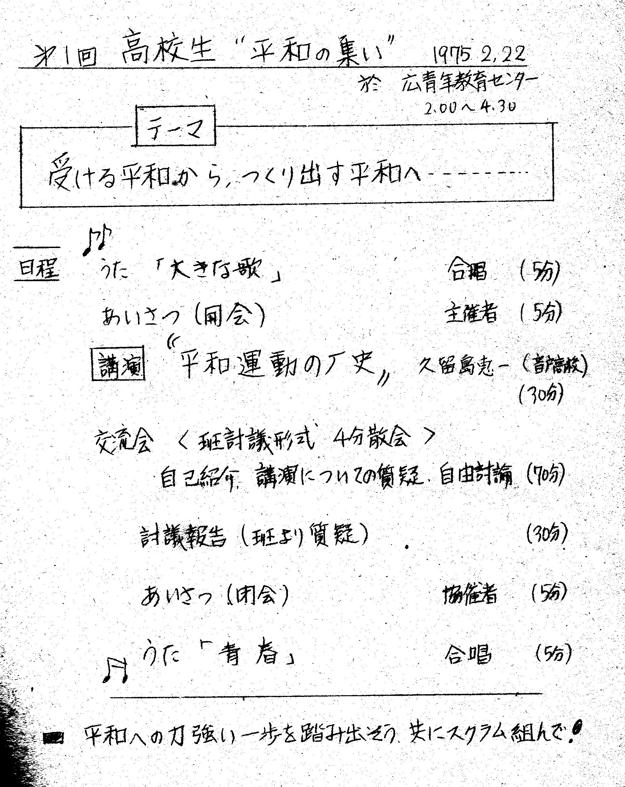
「集い」表紙
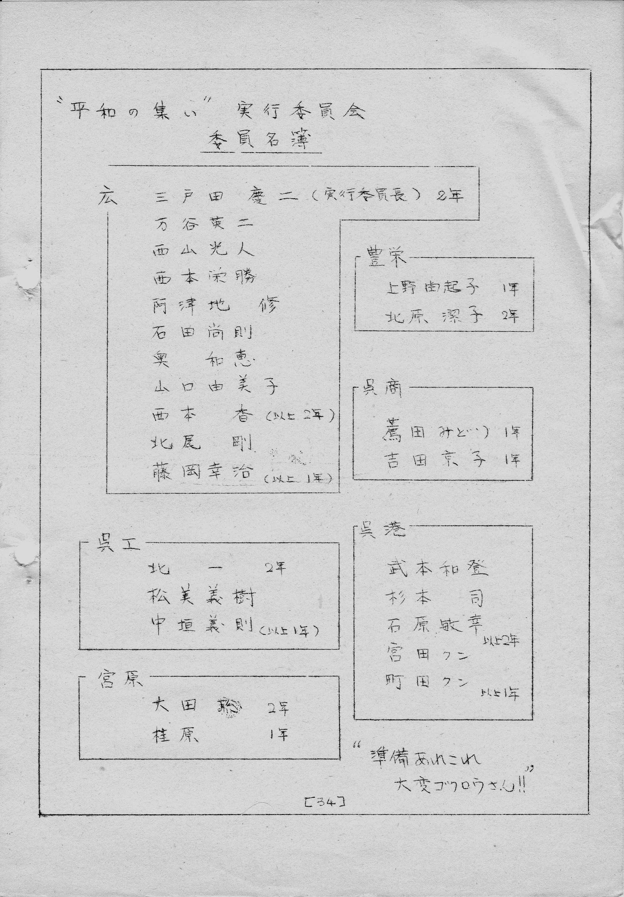
実行委員
第２回 75、6・28 呉勤労会館 参加者１５０名 (広商から５名)
・運営を広高校、豊栄高校、宮原高校、三津田高校、呉工業高校で行う
・中国新聞記者 吉川氏の「呉空襲について」講演
・講演をもとに、５つの分散会で活発な論議を展開
・広商の原爆問題研究部から5名参加してくれた
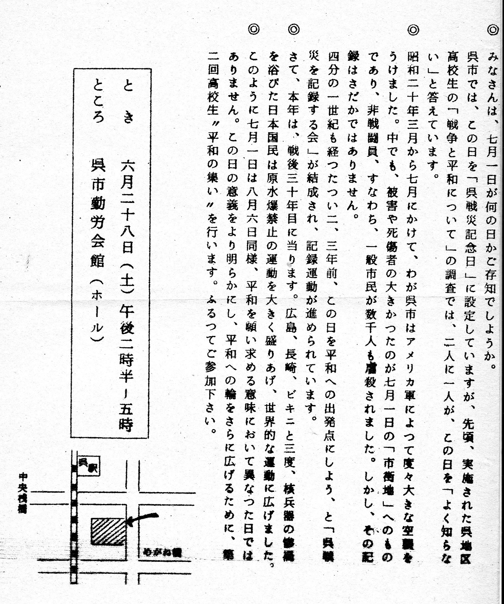
案内ビラ
案内表紙
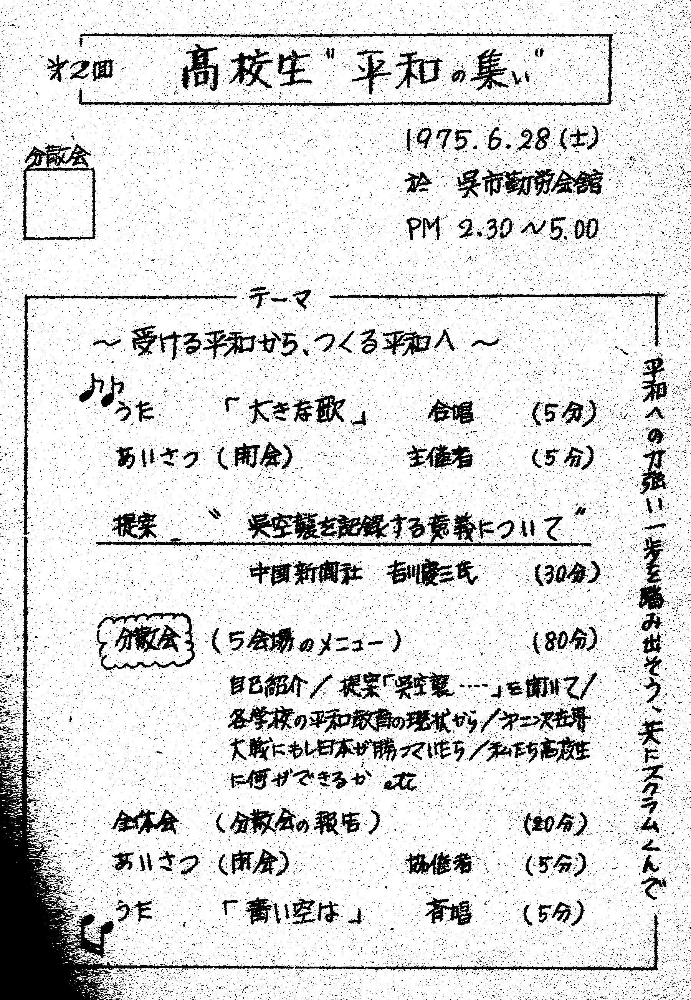
「集い」テーマ
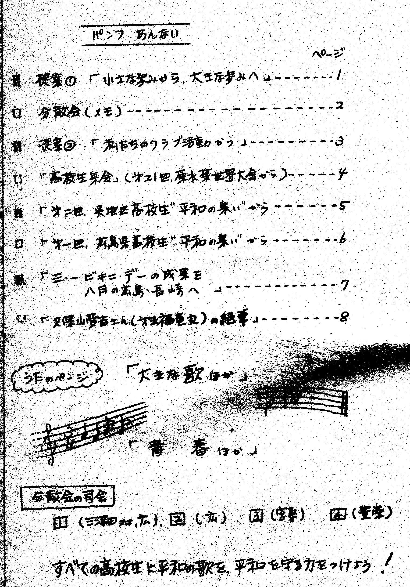
パンフ
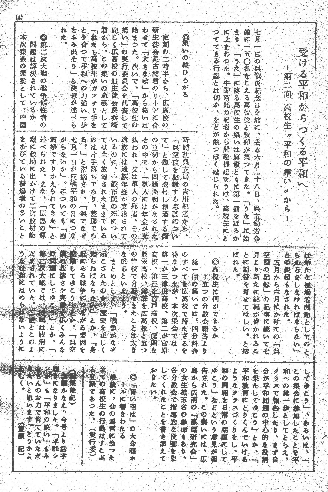
あとがき
第３回 76、2・21 広教育センター
・自分たちの手でとの趣旨通り、具体的な３つの提案で４つの分散会を設定、
1. 広高校「小さな歩みを大きな歩みにしよう」
2. 豊栄高校「父母の戦争体験記録集」
この冊子は、2019年に当時の豊栄高校の教諭棚田先生によって「大和ミュージアム」寄贈された。
3. 広商原爆研究会部から１年間の活動報告
・集団ゲームの「知恵の輪」は、好評で参加者の一体感を高めた。
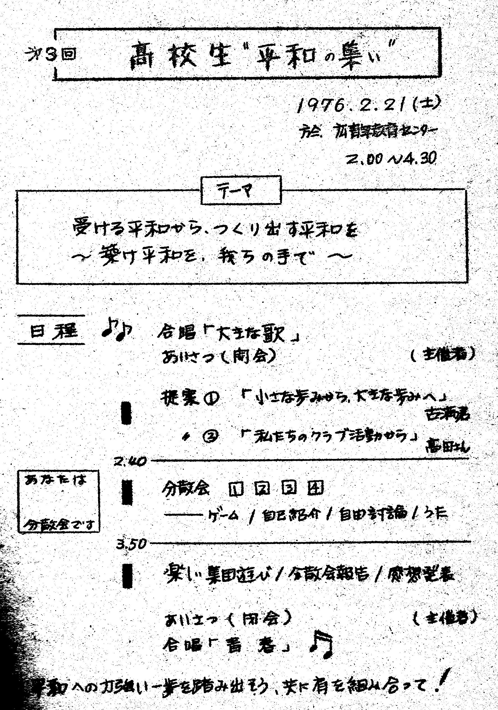
表紙
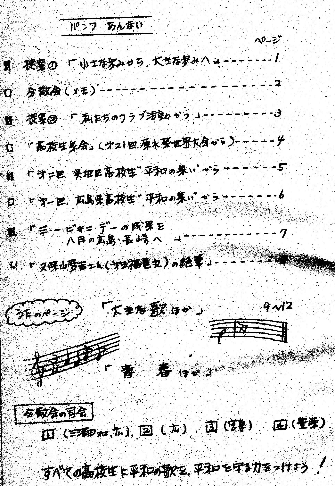
パンフ
実行委総括
反省と課題
参加者数
萱原先生の総括
第４回 76、6・26 呉勤労会館
・初めてフォーク同好会の演奏を取り入れ、和やかな集いとなる。
・４校の提案
広高校 「ホームルームにおける平和問題」
呉工業 「私にとっての平和とは何か」
宮原高校「はだしのゲン」の読書運動と映画鑑賞の取り組み
広島商業「母校の原爆実態の取り組み」
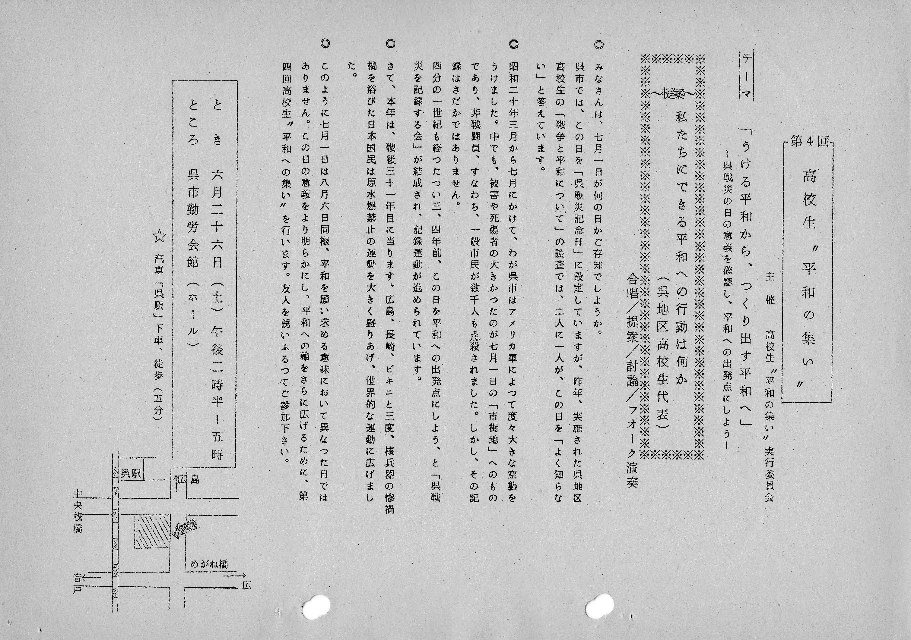
案内ビラ
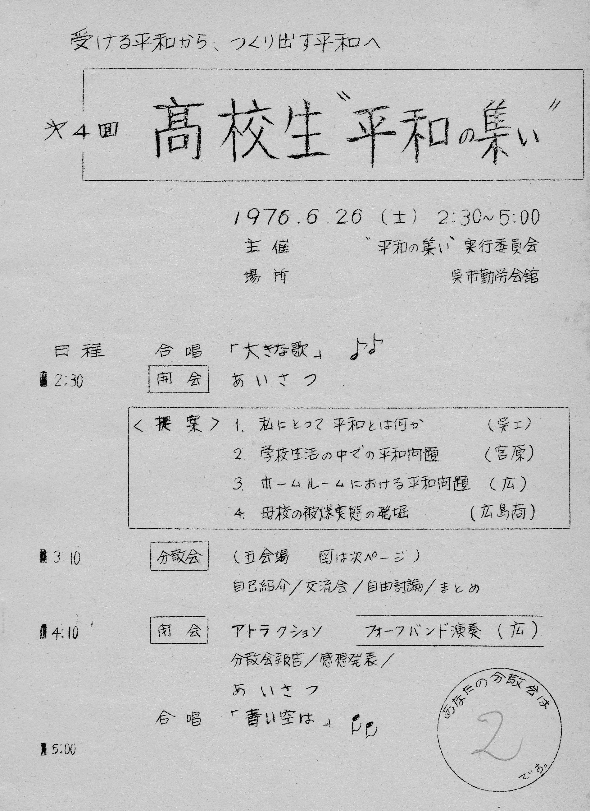
集会もくじ
実行委員会
集い案
第５回 77、2・19 広教育センター
・全体提案
三津田高校「平和に対する高校生の態度」
広高校 「作り出す平和への若干の提案」
豊栄高校 「忘れてはならない戦争中の生活」
広島商業 「広島における高校生の活動」
・四つの拍手（裏方さん・先生方・広島の仲間・参加者全員）は、集いを盛り上げる閉会行事となる。
 表紙
目次
分担
分担２
表紙
目次
分担
分担２
分科会１
分科会２
第６回 77、6・26 呉勤労会館
・実行委員の事前学習を２回持って集いに臨んだ
・分散会を分科会へと発展させ、提案に基づく討論を初めて行った。
広高校 「ホームルーム活動からＤＨＫ（同和・平和・公害）研究会」へ取り組み
呉工業 「８月の登校日に向けて」
豊栄高校「平和の集いへの事前学習」
音戸高校「はだしのゲンを読んで感じたこと」
宮原高校「観念論から具体論へ」
・音戸高校中塩さんの基調提案は、参加者に大きな感動を与える。
・基調提案「戦争を知らない私たちだからこそ」 戸高校 中塩さん
「みなさんのなかで、この集いに初めて参加されるという方がいらっしゃると思うのです
けれど、その人達に平和の集いがどんな集いかを知って頂くために、また参加経験の
ある人には（平和の集い）の意義を、今一度考えていただくために
（平和の集い）がどのように開かれてきたかという事を少しお話したいと思います。
高校入試という選抜体制の中で、同じ中学出身の生徒でありながら、
会話さえ交わされないという現状を打開する方法はないか、
また学校における平和教育をより深めていくものはないか、という声が呉地区の高校の先生から出され、
各高校間の交流を深める一方で、高校生として平和の問題や今日の現状について
積極的に考え、取り組んでいくような集いを持ってみようという事で、この集いが考えられました。
こうして、１９７５年の２月、第１回の高校生平和の集いが開かれ、以後、第５福竜丸が水爆実験のために死の灰をかぶったことがきっかけとなって、
戦後の平和運動の出発点となった「３月１日のビキニデー」の前と、昭和２０年７月１日の
数千人の非戦闘員が虐殺された呉空襲記念日の前の年２回「受ける平和から作り出す
平和へ」をテーマに、歌で始まり歌に終わるとして、
定期的に開かれるようになり、今回で第６回を迎えます。
さて、第５回の集いが開かれたときに、私は音戸高校の生徒会長という立場にありました。
平和の問題が扱われている１冊の児童文学を読んだことがきっかけで、いろいろ勉強しているうちに、平和の大切さを身にしみて感じるようになっていた私は、
これはいい機会だ１人でも多くの人に平和の問題に触れる時間を持ってほしいと考えて、執行部の人と一緒になって平和の集いへの参加に取り組みました。
パチンコに入ってはいけません。お酒やたばこもまだ早すぎます。と、高校生にはいろいろ制限があるけれども、高校生だから参加出るという場もある。
高校生だから考えなくてはならないこともあるんだ、めったに他校との交流の無い文化部に対しては、
仲間を増やすために参加しようということを、生徒会各委員会から呼びかけた。
私たちは戦争を知らない世代だと呼ばれるが、知らないからと言って通り過ぎることはできない。
分からないなりにも知ろうとする仲間がいることを知らなければならない。
雰囲気に触れるだけで意義がある,という内容のビラ配り。
狭い学校のいたるところに貼った美術部制作のポスター。
初めて参加する人の不安を少しでも取り除こうとして説明会開きました。
ほとんどの人が平和の集いなんて知らないといった状況の中で、私たちも意地になって、生徒への呼びかけに躍起になりました。
そうして、いよいよ当日となり、音戸高校からは４９名という予想外の参加者を得ました。
その日、私の耳に入った参加者の感想は来てよかった。なぜ今まで勉強せずに過ごしてきたのだろう。次回も参加したい。というものばかりでした。
夢中になって取り組んできただけに本当にうれしくて、せっかくこれだけの参加者を得たのだから、学校へ帰ったら反省会、感想発表会を開こう。
次回には読書会や学習会を開いて行こうと、あの広教育センターを出ました。
ところが今回、第６回の取り組みをする中で、全校生徒に対してアンケートで意識調査をしたところ、
今回の集いに参加しますかの問いに対して、参加する、参加しない、参加したいが行けない、分からない、その他の５つに対して丸を付けるものでしたが、
参加経験がある人がわざわざ、その他に〇を付けて断じて参加する気はない。とか、
あんなくだらないものはやめてしまえ。もう２度と行きたくない。なんて書いているのがやたら目に付くのです。
参加してよかったという人もいたではないかと、一方でなだめながらも、なんで平和の集いなんかにむきになって取り組んだろうかと迷わずにはいられませんでした。
迷い、考えながら準備をする中で出した結論は次のようなことでした。
自分の意志で参加した人を言うまでもなく、人に誘われてしぶしぶ参加したとしても、
私にとって一冊の本がそうであったように、平和の集いへの参加がきっかけとなって、平和の問題を考えていくようになるかもしれない。
今すぐではないにしても参加し、いつか、平和なり戦争なりの問題にぶっつかった時に、
この集いに参加し考えようとしている多くの仲間がいるのだと知ったことが、大きな原動力になるかもしれない。
また、この集いがくだらないものだと思った人も、自分の目で確かめてそう言っているのだから、それはそれでいい。
その人は、どこがくだらないかなぜくだらないかを考えたかもしれない。
そのことによって平和とは何か、戦争とは何かという事が少しでも見えてくようになるかもしれない。
そういう事のために費やされた時間は、決して無駄になっていない。
自分自身で確かめるという行為は、高校生だから若いからできることなのだ。
そうして自分の体を動かして学んだ時、それは必ず自分のものになっていく。
これが作り出す平和の第一歩になるのだ。
私たちは直接戦争の経験を持たない世代です。
知らない世代として、人の話を聞いたり、人から知識を与えられたりするのは当然かもしれません。
しかし、私たちは知ろうとしない世代であってはいけないと思うのです。
戦後の日本に生まれてきた私たちにとって、直接の体験はなくとも、私たちの生活は決して戦争とは無縁ではないからです。
戦争が自然発生的なものではなく、引き起こされる要素を持っているのと同じように、
平和も作り出されて行くものであり、同時に、黙って見過ごしていると奪い去られる可能性さえあるものだと思います。
私たちの子供の時代が、再び繰り返される戦争の悲惨さによって、平和の尊さが語られる世代ではなくて、
戦争体験を持たずに成長した私たちによって守られ作り出された平和の尊さが語られるような、そんな時代でなければならないと私は思います。」
（割れるような拍手）
第７回 78、2・26 呉勤労会館
・分科会の質的向上を目指して、初めて常任実行委員会を設けて事前に集まって準備した
・第６回の集いを収録したスライド「平和の集いのあゆみ」を上映し、集いの意義を訴えた。
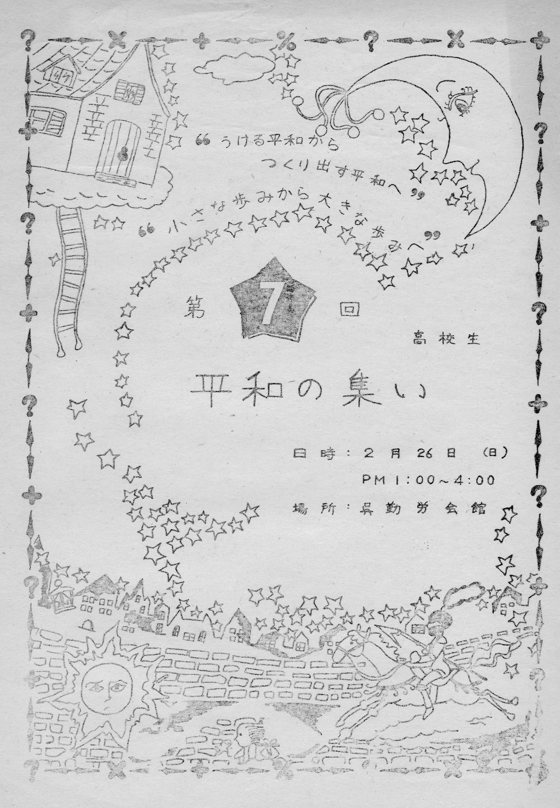
案内
日程
目次
実行委名簿
実行委討議
報告１
報告２
報告３
報告4
報告５
あゆみ１
あゆみ２
あゆみ３
アンケート
第８回 78. 6・17 呉勤労会館
・豊栄高校の上野さんの詩の朗読
・映画「生きる」の上映 深い感動を呼ぶ
・集いがゲームに偏り 討議か深まらず。楽しかったが不満の声あり
第９回 79、2・17
・各校の分担で具体的な提案資料にもとづいて提案され、かなり活発な討議が行われた。
・集いのポスターの交換等、広報活動も活発に展開された。
・「青春」の歌とリズム体操は、会場に熱気をもたらした。
第１０回 79、6・23 呉勤労会館 200名
・呉空襲について 呉工業高校の朝倉先生の講演.
・呉空襲体験 主婦 植田さんの講演
・全体交流会での集団ゲームは盛り上がった。
・講演を2つしために分科会が出来なかった
以上、その１ 終わり
（参考資料）当時の広高校の状況
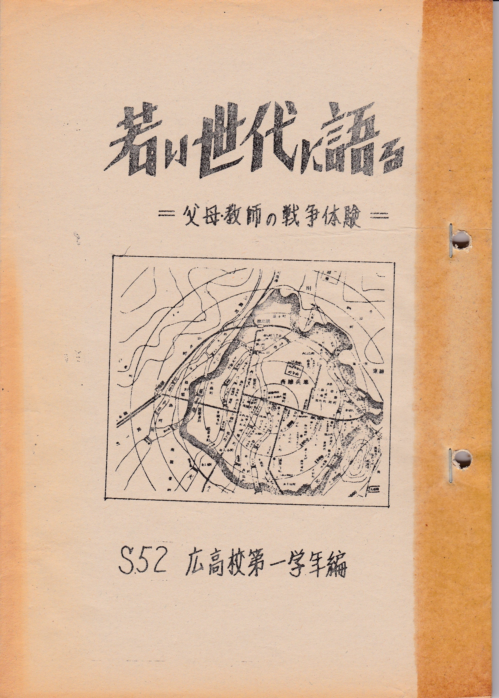
「若い世代に語る」＝父母教師の戦争体験＝
 明日に生きる（萱原 威）
明日に生きる（萱原 威）
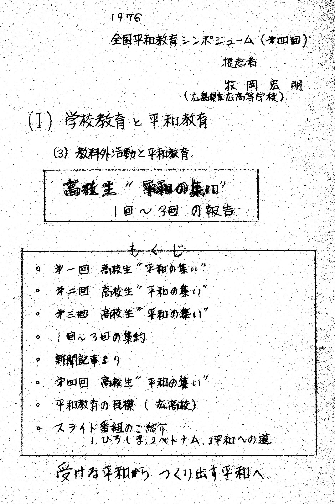
平和教育推進部の活動
「この月考える」ＨＲ
「呉地区高校生平和の集い」のあゆみーその２－へ
「呉地区高校生平和の集い」のあゆみーその３－へ
トップページに戻る